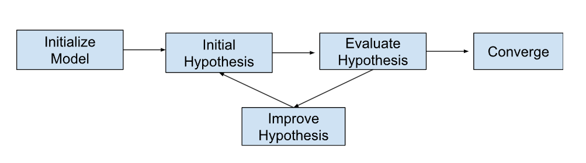

Intro To Artificial Intelligence#
What is Artificial Intelligence?#
Now that we have covered traditional computing, we are ready to tackle Artificial Intelligence or AI.
As previously explained, humans are slow but smart, and computers are fast but dumb. Thus, programmers guide computers through tasks by designing algorithms and writing programs, leaving computers to handle all of the repetitive calculations.
But what if we could bridge the gap between computers and humans? To answer this, let’s break down the term “Artificial Intelligence”. Here, “artificial” indicates that the entities involved are machines instead of humans, and intelligence refers to cognitive faculties similar to humans. Thus, the core purpose of AI is to emulate the capabilities of humans with the power of machines.
Artificial Intelligence in Practice#
Here are some examples of AI applications:
Spotify’s song recommendations based on user listening patterns.
Google Maps’ navigation, considering real-time traffic to find efficient routes.
Tesla’s vehicles detecting and avoiding obstacles, such as pedestrians.
Financial institutions using AI to forecast market trends by analyzing web activity.
Here are some non-examples of AI applications:
Binary search algorithms.
The entirety of the Internet.
The specific computing device you are using to complete this course.
While AI is a significant advancement in technology, the entirety of the internet and computing infrastructure are equally as advanced, important, and modern. If a solution employs AI, it is not necessarily better than a solution that does not. Not every problem can and should be solved with AI; it is simply another tool in our inventory.
What problems does AI solve?#
To understand the problems AI solves, we must understand how it works. The most popular form of AI is machine learning. How do we make a machine learn? Let’s take the example of a child learning how to ride a bike. At first, they will try and likely fail. They may not have pedaled fast enough or pushed too hard on the handles. Taking this information (that they may learn from a parent or may observe themselves), they try again. Over time, as they try and improve again and again, they hopefully will keep improving until they finally are able to ride a bike.
{kind=link}
Machine learning operates under these exact same principles. We can think of machine learning as attempting to create a model that is trained to complete a specific task.
Choose an ML algorithm and initialize hyperparameters
This is equivalent to choosing a bike. If a bike is broken, it doesn’t matter how much the child tries: they may not be able to ride it, or they may learn incorrect behaviors that do not translate to all bikes. We can think of choosing a model and hyperparameters as giving our model its “identity”, which changes depending on the math and numbers we choose to calculate.
Generating an initial hypothesis
This is equivalent to riding the bike the first time. Like the child, our model will usually randomly generate some random guess or hypothesis. We may randomly guess a song that a user might like or a route that a car should take.
Evaluating the hypothesis
This is equivalent to a parent telling a child what they did wrong, or a child observing it themselves. For ML algorithms, we will usually calculate some “score” or heuristic that evaluates how well it completed the task we want to train. For instance, if we are creating a GPS router, we may define a heuristic that gives low scores to long routes and high scores to short routes. When we externally supply data to inform a model, it is called supervised learning. When we let the model learn on its own, it is called unsupervised learning
Refining the hypothesis
This is equivalent to a child learning from their mistakes. Usually, when we calculate the “score” of a certain hypothesis, we also record some information that helps us improve our model. Once again, with the GPS system, we may notice that one of our right turns brought us further away from our destination, and thus will instead make a left turn.
Convergence
This is equivalent to a child eventually learning how to ride a bike after many repeated attempts. We will continually repeat steps 3-4, hopefully improving our hypotheses each time. ML models are designed to converge to some hypothesis after a certain amount of time. If this value is desirable, we are done. If it is not, we may need to return to step 1.
{kind=link}
ML models are powerful because they are able to draw conclusions from a large amount of data: much larger than any human. Furthermore, because their logic is purely driven by math, they can often come to unique conclusions compared to humans. Thus, these are the problems that are best suited for ML.
Prediction: Anticipating future events based on prevailing conditions.
Decision-making: Identifying optimal actions from given circumstances. This is closely related to prediction as if we can accurately predict the result of any decision we can determine the correct one.
Classification: Categorizing data given that each point has a set of characteristics.
These are all suitable tasks because they rely on making conclusions based on data.
Multiple Choice Quiz#
Which of the following problems would best be solved with AI?
A. Defending an enterprise network from malicious web attacks B. Keeping track of billions of database entries while ensuring easy access C. Determing whether a user is a human instead of a machine using Captcha D. Determining which restuarant a person would want to go to based on their personal information
The answer is D as it is the only problem that involves computing a large amount of data (personal information) to come to a conclusion (restaurant). A is largely an Internet problem which is not AI. While B involves data it is more concerned with storing, not making conclusions from it. While C makes a conclusion, and it is used to defend against AI, it does not use data to come to this conclusion.
For each of the following examples determine whether the problem is prediction, decision-making, or classification.
A. Spotify's song recommendations based on user listening patterns. B. Google Maps' navigation, considering real-time traffic to find efficient routes. C. Tesla's vehicles detecting and avoiding obstacles, such as pedestrians. D. Financial institutions using AI to forecast market trends by analyzing web activity.
D is prediction as we are guessing what a future event is. A and B are decisionmaking as we are deciding the song to listen to or the route to take. C is classification because we need to be able to distinguish between pedestrians from the background. For example, we should yield to pedestrians but not necessarily to other track.
Activity#
Create a list of 5 problems you encounter in your work life. For each, classify whether they would be better solved with or without AI. If with AI, classify whether the problem is prediction, decision-making, or classfication. If without AI, explain why.